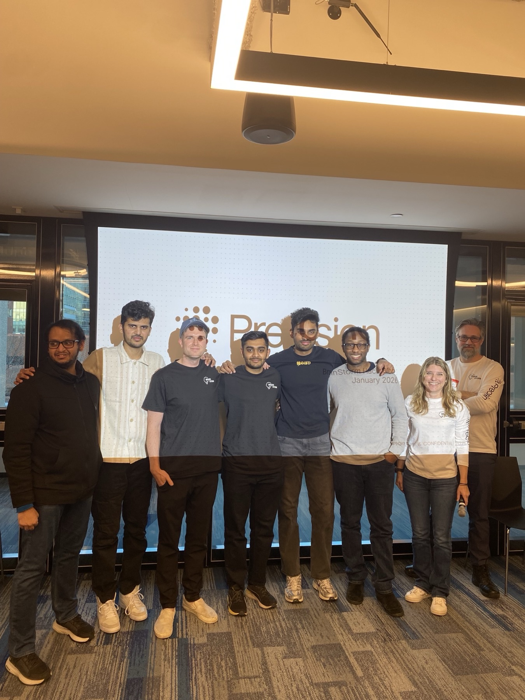
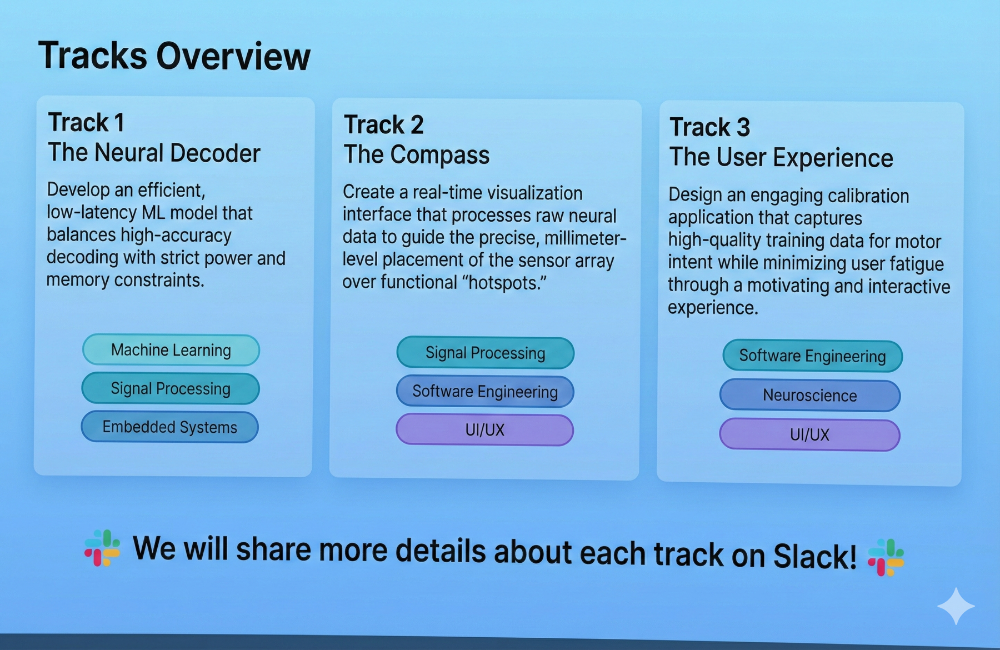

Real-Time Neural Decoding Under Hardware Constraints
BrainStorm 2026 was a two-day brain-computer interface (BCI) hackathon hosted by Precision Neuroscience. The company makes the Layer7 micro-ECoG array, a 1024-electrode implant on the cortical surface that is currently in clinical trials. Track 1 was built around that hardware.
The task is to classify which sound frequency the subject is hearing from a continuous stream of voltage recorded by 1024 electrodes on an animal's auditory cortex. The model makes one prediction per millisecond, using only past data.

Real BCIs run on implanted or wearable devices with hard limits on power, memory and compute. A useful model has to be accurate and also fit on the target hardware. The scoring enforced this: accuracy was worth 50 points, and latency and model size together were worth the other 50.
The Scoring Formula
The final score combined three metrics with exponential penalties. The penalties are steep: a 5 MB model scores about 12 points lower than a 1 MB model on the size component alone, and a 50ms lag scores roughly 8 points lower than a 10ms lag.
| Metric | Weight | Formula | What it rewards |
|---|---|---|---|
| Balanced Accuracy | 50 pts | bal_acc × 50 | Equal recall across all classes |
| Prediction Lag | 25 pts | exp(−6 × lag_ms / 500) × 25 | Sub-10ms detection of stimulus onset |
| Model Size | 25 pts | exp(−4 × size_mb / 5) × 25 | Compact enough for embedded hardware |
Note: the exponential penalties on lag and size are steep. A 5 MB model instead of 1 MB costs ~12 points, and a 50ms lag instead of 10ms costs ~8 points.
The evaluation harness feeds data one sample at a time. A model can keep a buffer of past data, but any use of future samples leads to disqualification. That rule excludes bidirectional filters and non-causal normalization.
90 Seconds of Brain Activity, 16:1 Class Imbalance
The training set holds 90,386 timesteps sampled at 1000 Hz, about 90 seconds of recording, across 1024 float32 channels. The validation set adds another 22,596 samples.
Nine target classes cover silence (0 Hz) and the eight frequencies, in Hz, of the presented auditory tones:
Silence dominates, at 67% of all samples. A model that predicts silence everywhere achieves 67% raw accuracy but only 11% balanced accuracy, which averages recall over the classes and is the metric the competition scores. Training that ignores this imbalance will converge to a model that always predicts silence.
One signal-processing detail matters here: the sampling rate is 1000 Hz, so the Nyquist frequency is 500 Hz, and the highest stimulus at 9736 Hz aliases into the recordable band at ~264 Hz. The model learns the cortical activity pattern that each stimulus produces and does not need the physical frequency. All frequency discrimination happens within 0–500 Hz, and 93.9% of total signal power lies below 30 Hz, where local field potential (LFP) oscillations dominate.
PCA + EEGNet + a Large Context Window
The pipeline has three parts: principal component analysis (PCA) to compress 1024 channels to 32, EEGNet for classification and a 1600ms causal context window. Each part affects all three scoring metrics, so we tuned them together.
Step 1: PCA Channel Reduction (1024 → 32)
High-density electrode arrays like the Layer7 record from 1024 channels simultaneously, and the channels differ widely in how much information they carry. On this dataset, ~250 channels account for 50% of signal power and 600 channels account for 80%. The rest is noise and correlated redundancy.
We fit PCA on the training data and project to 32 components, which shrinks every downstream weight matrix from 1024 wide to 32 wide and reduces the parameter count and file size. The top 32 principal components (PCs) capture the most consistent covariance across the electrode array, so the noise-dominated directions are discarded. At inference, the projection is one matrix multiply.
class PCAProjection:
def fit(self, X: np.ndarray) -> Self:
# X shape: (n_samples, 1024)
self.mean_ = X.mean(axis=0)
centered = X - self.mean_
_, _, Vt = np.linalg.svd(centered, full_matrices=False)
self.components_ = Vt[:self.n_components] # (32, 1024)
return self
def transform(self, x: np.ndarray) -> np.ndarray:
# At inference: single matrix multiply — (1024,) → (32,)
return (x - self.mean_) @ self.components_.TStep 2: EEGNet Architecture
EEGNet (Lawhern et al., 2018) is a compact convolutional neural network (CNN) designed for BCI classification from electroencephalography (EEG) and ECoG. With 90 seconds of training data and tight size limits, an architecture with built-in assumptions about neural signals will outperform a general-purpose one on this kind of problem.
The architecture splits the spatiotemporal convolution into two explicit stages. A temporal filter learns when neural features occur, and a depthwise spatial filter then learns which channel combinations matter. The two separate stages need far fewer parameters than one joint spatiotemporal convolution, which keeps the model small enough to meet the size constraint.
def forward(self, x: torch.Tensor) -> torch.Tensor:
# x: (batch, 1, n_channels=32, window=1600)
# Block 1: temporal patterns
x = self.conv1(x) # (B, F1=8, 32, 1600)
x = self.bn1(x)
# Block 2: spatial channel combinations (depthwise)
x = self.depthwise(x) # (B, F1*D=16, 1, 1600)
x = self.bn2(x)
x = F.elu(x)
x = self.pool1(x) # (B, 16, 1, 400) — aggressive downsampling
x = self.dropout1(x)
# Block 3: separable convolution
x = self.separable1(x) # depthwise
x = self.separable2(x) # pointwise
x = self.bn3(x)
x = F.elu(x)
x = self.pool2(x) # (B, F2=16, 1, ~50)
x = self.dropout2(x)
x = x.flatten(start_dim=1)
return self.fc(x) # (B, 9)Step 3: Training Strategy
Class-weighted loss. Standard cross-entropy on this distribution collapses to predicting silence. We weighted each class by the inverse of its frequency, so a correct prediction on a rare tone contributes the same gradient signal as a correct prediction of silence.
# Inverse frequency class weights
class_counts = np.bincount([label_to_idx[l] for l in labels])
weights = 1.0 / class_counts
weights = weights / weights.sum() * len(weights)
criterion = nn.CrossEntropyLoss(
weight=torch.tensor(weights, dtype=torch.float32).to(device)
)Final retrain on the full dataset. After choosing hyperparameters on the validation split, we retrained on the combined training and validation data for 45 additional epochs. With only 90 seconds of training data, the extra 22,000 samples made a difference.
Final hyperparameters:
| Parameter | Value | Why |
|---|---|---|
projected_channels | 32 | Optimal size/accuracy tradeoff |
window_size | 1600 | 1.6 seconds of causal context (see below) |
F1 (temporal filters) | 8 | EEGNet default |
D (depthwise multiplier) | 2 | EEGNet default |
dropout | 0.25 | Regularization on small dataset |
batch_size | 64 | Stable gradient estimates |
epochs | 30 + 45 | Validation tuning + full retrain |

Window Size Is Cheap. History Is Valuable.
Most teams used context windows of 50-128ms, on the straightforward reasoning that a smaller window means less data to process and should therefore be faster. We pushed the window to 1600ms and found that inference time barely changed.
Accuracy jumped 27 percentage points with no change in inference latency.
| Window Size | Balanced Accuracy | Accuracy Score | Inference Latency | Delta |
|---|---|---|---|---|
| 128ms (128 samples) | ~67% | ~33.5 / 50 | <1ms | baseline |
| 1600ms (1600 samples) | ~94% | 47.1 / 50 | <1ms | +20% accuracy, same latency |
The explanation lies in how EEGNet handles its input.
EEGNet's average pooling layers compress the time dimension before the computationally expensive operations run:
Input window: 1600 samples
After Pool1: 400 samples (÷4)
After Pool2: ~50 samples (÷8)
→ Classifier sees a 50-sample representation regardless of input window lengthBy the time the input reaches the classifier, a 1600-sample window has been compressed to roughly 50 time steps. The cost of the forward pass is dominated by fixed-size matrix multiplies.
The PCA projection and the ring-buffer update also run in constant time. Latency therefore depends on a handful of fixed-size matrix operations and hardly at all on the input window length.
Auditory cortex responses to sustained tones build slowly. These responses are synchronized low-frequency oscillations that take hundreds of milliseconds to reach a steady state. A 128ms window catches the onset transient but misses the stable activity that distinguishes one tone from another. At 1600ms, each class produces a clearly distinct pattern.
Final Leaderboard: 91.7 / 100, 22.5 Points Ahead
Ten teams competed. We finished at 91.7, and synapse placed second at 69.2. The accuracy component drove most of the gap, at 47.1 versus 30.9 out of 50 points, which corresponds to 94.2% balanced accuracy versus about 62%.
On latency and size the field was fairly competitive, and most teams achieved inference under 20ms. The accuracy gap came from the 1600ms context window, which no other team used.
Code
The full codebase is on GitHub, forked from the official BrainStorm starter template. It includes the EEGNet implementation, the training scripts and a benchmark utility that reports all three sub-scores for any checkpoint.
git clone https://github.com/qsimeon/brainstorm-track1-public
cd brainstorm-track1-public
make install # sets up uv venv + dependencies + git hooksuv run python examples/train_eegnet.py \
--window-size 1600 \
--projected-channels 32 \
--batch-size 64 \
--epochs 30uv run python examples/benchmark_eegnet.py
# outputs: balanced_accuracy, lag_ms, size_mb, and all three sub-scoresmodel = EEGNet.load() # loads model.pt from repo root
model.reset() # clear history buffer for new session
for sample in stream: # sample shape: (1024,)
prediction = model.predict(sample)
# prediction: scalar Hz class (0, 120, 224, ... 9736)Lessons for BCI Engineers
Profile latency before treating context window size as a constraint
For convolutional architectures with pooling, inference time grows far more slowly than input length. We moved from 128ms to 1600ms with no measurable change in latency. The assumption that larger windows are slower is worth checking before it shapes your architecture decisions.
PCA does more than reduce dimensionality on high-density arrays
In ECoG, most of the structured signal occupies a small subspace. PCA compression reduces model file size, speeds up computation and discards noise-dominated directions, all at once. Under a score that weighs accuracy, latency and size together, that combination of effects matters.
Track balanced accuracy from the first epoch on imbalanced data
With 67% of samples silent, raw accuracy and balanced accuracy diverge by 60+ percentage points. An unweighted model will converge to predicting silence. Weight the loss from the start and track the right metric, so that you see the problem while there is still time to fix it.
Architecture choice matters more when training data is scarce
EEGNet's structure matches the actual properties of ECoG data, with temporal filtering before spatial filtering and explicit pooling at appropriate scales. With 90 seconds of training data, those built-in assumptions outperformed the flexibility of transformers and long short-term memory networks (LSTMs), which have more capacity but needed more data to use it effectively.
Build the benchmark for all three scoring dimensions on day one
It is easy to optimize accuracy and find out near the end that the model is too large. Because the scoring formulas were public, we built a script early that reported all three sub-scores for every run, which kept the tradeoffs visible throughout.
Team MindMeld · BrainStorm 2026, Track 1: Neural Decoder Challenge
Quilee Simeon · Dennis Loevlie · Raghav Gali · Rohan Bhatane · Shravankumar Janawade · Sriram G.
Hosted by Precision Neuroscience at the Microsoft NERD Center, Boston · January 23–24, 2026 · 10 competing teams